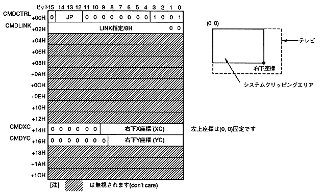

Clipping means clipping (clip) so that it is not drawn in an area other than the set display area. There are two types of clipping: system clipping that sets the drawing area of the system and user clipping that can be set freely by software.
∙ When the command selection bits (bits 3 to 0) are 1001B, it is a system clipping coordinate setting command, and when it is 1000B, it is a user clipping coordinate setting command.
The contents of the system clipping coordinate setting command table are as follows.

The system clipping coordinate setting command is defined as follows.
- If the end bit (bit 15) is set to 0B and the command selection bit is set to 1001B, it becomes a system clipping coordinate setting command.
- Specify the jump format. When the jump format is assign or call, divide the address of the command table to be processed next by 8H and set to CMDLINK.
- Define the lower right coordinate of the clipping area in CMDXC and CMDYC. The upper left coordinate is fixed at (0,0). The drawing area is on and inside the rectangle (rectangle) line represented by the upper left coordinate (0,0) and the lower right coordinate (XC, YC).